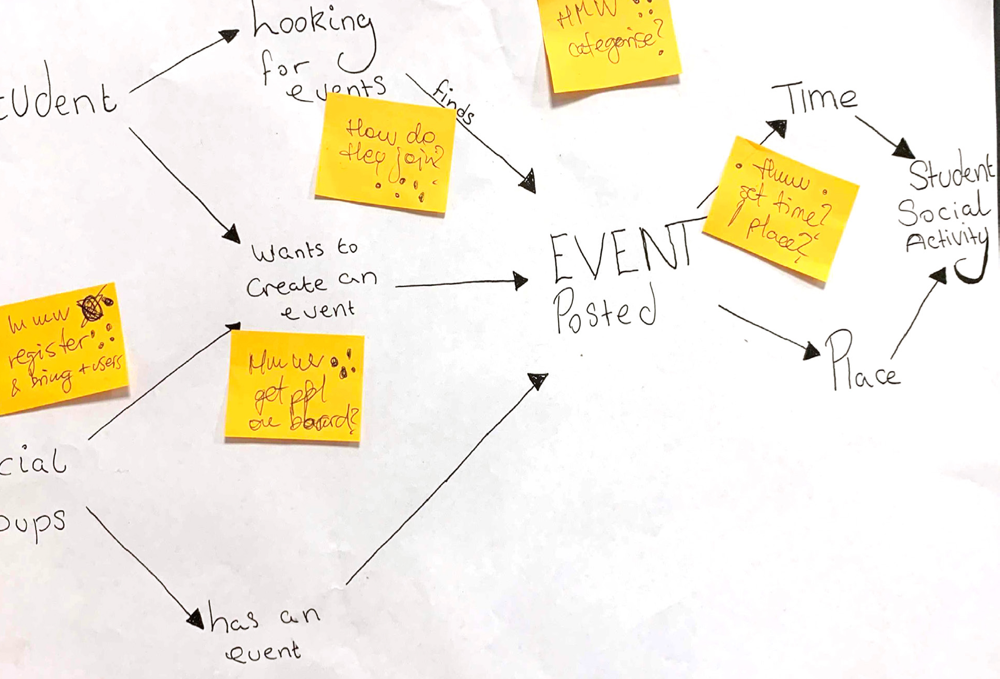
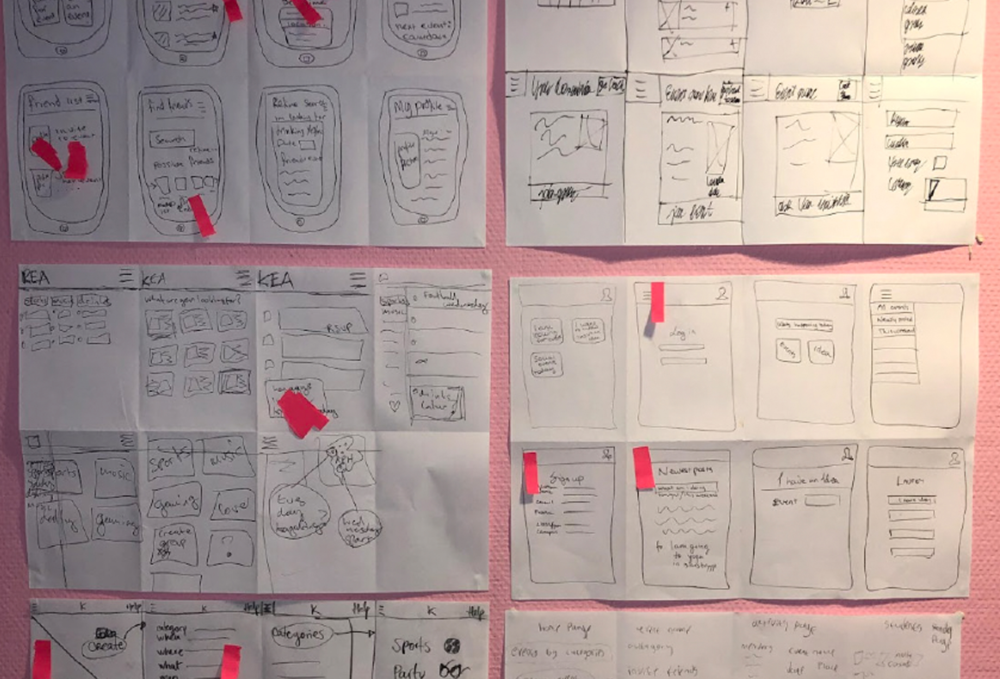
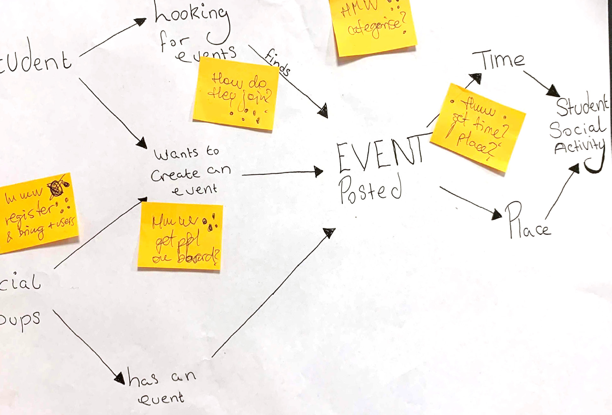
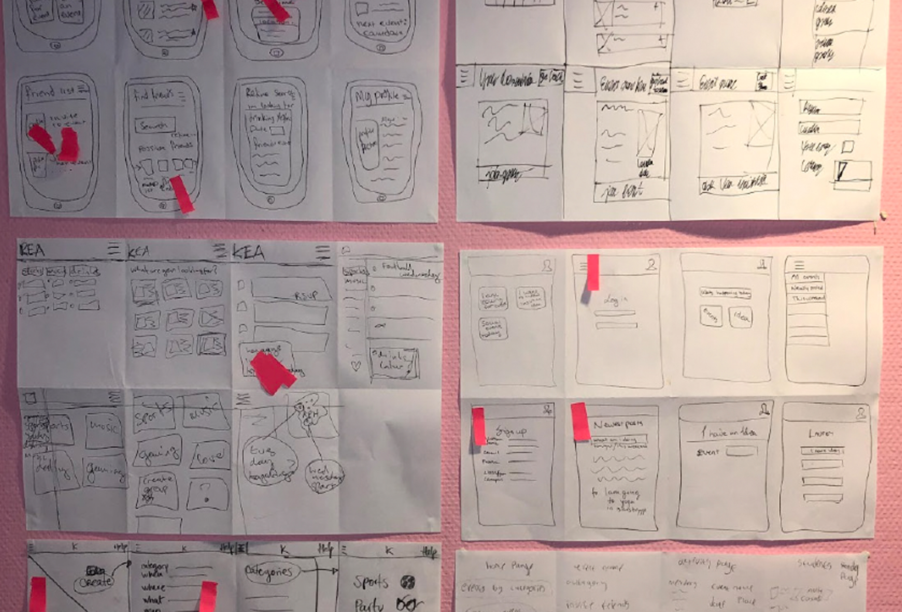

Research four topics with different types of research, process the data and finding insights and results. Combining it into one PDF file.
Collecting desk-, observation-, interview- and survey research to produce data and insights about what users do and why.
Using the right types of research for different topics. Processing data and finding results, key factors and insights.


Build an XD prototype of a website using a UI kit, which helps new international students in Copenhagen (your target audience) finding accommodation, a job and a social network.


Desk Research on conventions regarding design, content and functionality and on digital communication towards an international audience. Finding solutions on how to make a XD prototype for the topic. Copy and microcopy to provide good UX for the target audience, style tile, wire flow of the solution. XD prototype and Think Aloud Test.
Skills and knowledge in Adobe XD. Understanding of copy and microcopy, low- and high-fidelity and how to use Think Aloud Test to improve a product.


Create a native app concept improving student life and studying for KEA students. Choosing a challenge that fulfills a wish or covers a need for students and that will improve the education, studying or study life for the students.
The Design Sprint Map, sketch, decide, prototype and pitch. Team Canvas, HMW notes, The Four-step sketch, supervote, “maybe laters”, testing and pitching.
I took a part in everything. Like almost everybody, I mad a map of our idea the first day and sketched the second day. I was the decider the first day and had the final decicion when the team did not agree in the end. I helped make the storyboard and the heat map. I took part in the voting. I had a voice in both of the low- and high-fidelity prototypes and some of my idead were part of the final product. I took interviews and was over the usertesting. The slides for the pitch were also made by me.
Working in a fast paced rhythm in five days with five types of method for each day where decisions will have to be made quickly. Using The Quick and Dirty method to create a team. Working in a big group with a lot of big personalities and creative people where roles are given out for team members.


 


